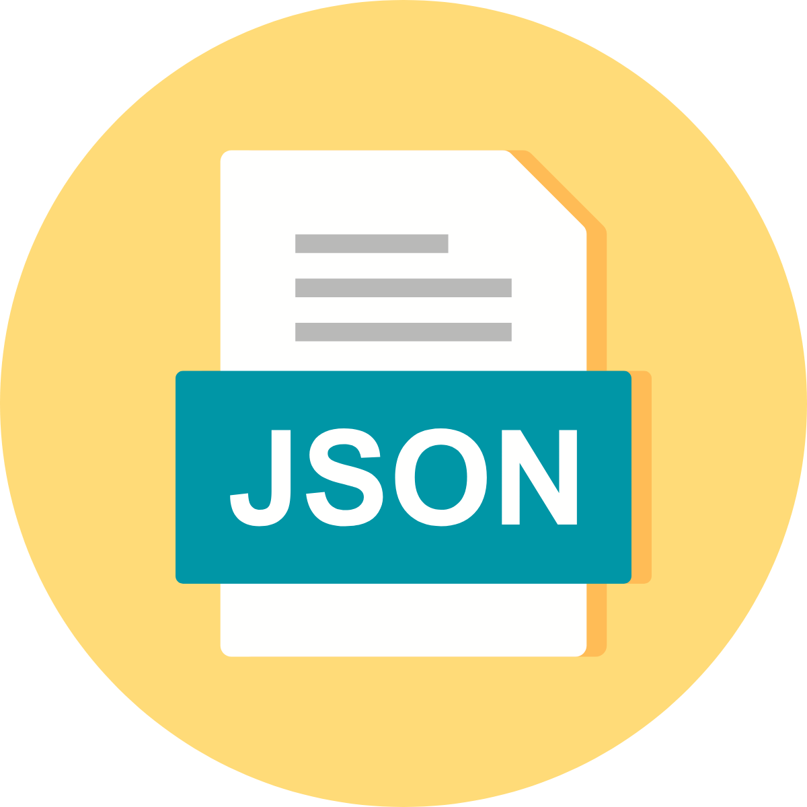

What You Need to Know about JSON: A Complete Introduction for Beginners
Welcome to Chapter 33 of our "Mastering AWS DevOps" series! In this beginner`s guide, we`ll explore the basics of JSON, its structure, key features, and how to use it in your projects. In today`s digital world, where data is at the heart of most applications and websites, JSON (JavaScript Object Notation) has become a crucial tool for developers and data enthusiasts.
JSON is commonly used in web development to transmit data between a server and a client, particularly in API communications.
So, Let's understand the purpose, properties & syntax of JSON
Understanding JSON`s purpose
Now, let's zoom in on why JSON matters:
- Data Interchange: JSON enables seamless data transmission between different platforms, applications or programming languages.
- Web APIs: JSON is frequently used in RESTful APIs to send data between the server and web applications.
- Configuration Files: JSON serves as a format for storing configuration settings in many applications.
- Data Storage: Some databases, like MongoDB, use JSON-like formats (BSON) to store data.
Properties of JSON
Let's dive into the essentials:
- JSON is all about lightweight data sharing. It's like sending a message in a bottle across the digital seas.
- JSON didn't just stop at JavaScript – it's branching out and collaborating with an array of programming languages.
- JSON files sport the .json extension, giving them their own digital signature.
- Being text-based, JSON keeps it simple for both humans and machines. No decoding mysteries here!
- JSON's a friendly neighbour in the programming world. It adopts familiar conventions from languages like C, Python, Java, and more.
- JSON was developed to enable real-time communication between servers and web browsers, without needing extra tools like Java applets or Flash.
- While JSON was once seen as a part of JavaScript, it's now widely used across different programming languages.
- The code to handle JSON is available in many major programming languages.
Syntax of JSON
By now, you should have a basic understanding of JSON. Now, let's explore its fundamental structure.
JSON is primarily built upon two main components: name-value pairs and ordered lists of values.
JSON serves as a universal data structure, supported by most programming languages available today. This universality allows programmers to work with a single data type that can be used across different programming languages.
Here's a bit more about these data types:
- Name-Value Pair Collection: This is represented as an object, structure, record, or dictionary in various programming contexts.
- Ordered Value List: This corresponds to an array or list in programming languages.
With this foundation in mind, let's delve into a simple JSON structure. For instance, let's consider an example where we're representing car details using JSON.
Let’s assume we have a car object with the following basic properties and their attributes:
- Make and Model: Maruti Suzuki Swift
- Make Year: 2017
- Color: Red
- Type: Hatchback
So, if we want to transfer this data using a JSON file, then the serialization of this data will create a JSON.
JSON will look something like this:
{
"Make&Model": "Maruti Suzuki Swift",
"MakeYear": 2017,
"Color": "Red",
"Type": "Hatchback"
}
We have seen about the usage of JSON, its basic structure and how data is presented in the JSON format. Now, let’s take a closer look at how different elements are structured in JSON.
What is a JSON Object?
A JSON object is a combination of keys and their corresponding values, without any fixed sequence.
To group these keys and values, we enclose them in curly braces, indicated by the opening and closing “{ }”. So, for instance, in the earlier example where we crafted JSON related to a car, we were essentially forming a JSON car object. Creating a JSON structure comes with certain guidelines, particularly when dealing with key-value pairs.
So, when building a JSON, the initial step involves defining an attribute. For instance, we're creating an “Employee” JSON object. The subsequent task is to list down the characteristics of this object. Let’s imagine our employees possess attributes like “First Name,” “Last Name,” “Employee ID,” and “Designation.” These attributes of the employee correspond to what we refer to as “Keys” in the JSON structure.
Let’s create a JSON object:
{
"FirstName": "Sam",
"LastName": "Jackson",
"employeeID": 5678923,
"Designation": "Manager"
}
The entirety of content enclosed within the curly braces constitutes what's called the JSON Employee Object.
A fundamental JSON object is essentially composed of what we call Key-Value pairs. In the earlier instance, we employed JSON to portray employee information.
Within this JSON object, we outlined various characteristics of the employee, including “First Name,” “Last Name,” “Employee ID,” and “Designation.” Each of these characteristics, denoted as “keys,” is associated with a specific value within the JSON. For instance, the key "First Name" holds the value "Sam," and similarly, other keys are linked with their own distinct values.
Generic Rules to be followed while creating a JSON:
- JSON objects use curly braces {} at the beginning and end.
- Key fields are enclosed in double quotes, like "FirstName".
- Values are separated from keys using a colon :.
- Key-value pairs are divided by commas ,.
- JSON values can be strings, numbers, booleans, and more.
Now that you're familiar with the basics of JSON and how it's used, let's take the next step and explore more intricate JSON structures in a simple and understandable way.
A small exercise for all of you!
Try by your own to create a sample JSON describing an “Employee” with your own set of Keys and Values.
JSON Arrays
JSON arrays are like lists you see in most programming languages. They're collections of data items, and in JSON, they're organised using square brackets [ ]. Just like when you make a list, you start with an opening bracket [ and end with a closing bracket ].
Inside these brackets, you put the data items you want in the list, and you separate them with commas. This way, the computer knows where each item begins and ends. It's just like when you make a shopping list, you write down each thing you need and separate them with commas.
Now, let's see an example of an array in JSON. Remember the employee details we talked about before? Well, imagine if an employee knows different programming languages. Instead of listing them one by one, we can use an array to neatly show all the languages they know. It's like making a list of their skills. Just think of it as if you were listing your favourite hobbies, but in a computer-friendly way.
Examples of JSON
{
"FirstName": "Sam",
"LastName": "Jackson",
"employeeID": 5678923,
"Designation": "Manager",
"LanguageExpertise": ["Java", "C#", "Python"]
}
As we have already discussed, there are also a few rules that need to be followed while including an array in a JSON. Here are the key points to remember about arrays in JSON:
- An array in JSON begins with a left square bracket [ and ends with a right square bracket ].
- The values within the array are separated by commas.
- JSON can contain various components like objects, key-value pairs, and arrays, which can be combined to store different types of data within a single JSON structure.
Now, as we have already discussed the basic structure of JSON, let’s start working on a more complex JSON structure.
Earlier in this tutorial, we gave you two Examples of JSON as shown below.
Employee JSON
{
"FirstName": "Sam",
"LastName": "Jackson",
"employeeID": 5678923,
"Designation": "Manager",
"LanguageExpertise": ["Java", "C#", "Python"]
}
Car JSON
{
"Make&Model": "Maruti Suzuki Swift",
"MakeYear": 2017,
"Color": "Red",
"Type": "Hatchback"
}
Now, consider a scenario where there are multiple employees, each of whom owns a car. To effectively organise this information, we need to nest the car details within the employee's JSON data. This involves creating a nested Car JSON object inside the Employee JSON.
To achieve this, we begin by introducing a new key called "car" in the Employee JSON structure.
Something like this:
{
"FirstName": "Sam",
"LastName": "Jackson",
"employeeID": 5678923,
"Designation": "Manager",
"LanguageExpertise": ["Java", "C#", "Python"],
"Car": {}
}
Including Car in Employee JSON
After adding the "car" key to the employee JSON, we proceed to assign the corresponding car details directly to the Car JSON object.
{
"FirstName": "Sam",
"LastName": "Jackson",
"employeeID": 5698523,
"Designation": "Manager",
"LanguageExpertise": ["Java", "C#", "Python"],
"Car": {
"Make&Model": "Maruti Suzuki Swift",
"MakeYear": 2017,
"Color": "Red",
"Type": "Hatchback"
}
}
By following this approach, we can create a nested JSON structure. Consider a scenario where there are numerous employees; in such cases, we can construct a JSON capable of holding data for multiple employees.
[
{
"FirstName": "Sam",
"LastName": "Jackson",
"employeeID": 5698523,
"Designation": "Manager",
"LanguageExpertise": ["Java", "C#", "Python"],
"Car": {
"Make&Model": "Maruti Suzuki Swift",
"MakeYear": 2017,
"Color": "Red",
"Type": "Hatchback"
}
},
{
"FirstName": "Tam",
"LastName": "Richard",
"employeeID": 896586,
"Designation": "Senior Manager",
"LanguageExpertise": ["Ruby", "C#"],
"Car": {
"Make&Model": "Hyundai Verna",
"MakeYear": 2015,
"Color": "Black",
"Type": "Sedan"
}
}
]
In the provided example, it's evident that we've included information for two employees. However, when crafting intricate JSON structures like this, there are important points to keep in mind. Always enclose the entire JSON structure within square brackets "[ ]". Additionally, use commas to separate distinct data sets within the JSON, whether they are key-value pairs or JSON objects.
Recommended Practices for Working with JSON:
- Maintain readability: Employ correct indentation and formatting to ensure that your JSON is easily comprehensible.
- Validate your JSON: Before utilizing your JSON data in applications, take advantage of online tools to validate its accuracy.
- Limit nesting: To prevent complexity, minimize excessive nesting within your JSON structures. Strive for simplicity and clarity.
How to Write appspec.json File:
Assuming you have an application that you want to deploy using AWS CodeDeploy, you'll need to create an appspec.json file to define how the deployment should be carried out. Here's how you can create the appspec.json file step by step:
Version Definition:
{
"version": 1,
...
}
Resources:
{
"version": 1,
"Resources": [
...
],
...
}
In the blog, we learned about JSON objects and their key-value pairs. In this context, the "Resources" key is an array that holds objects representing the resources used in the deployment.
Target Service and Type:
{
"version": 1,
"Resources": [
{
"TargetService": "ecs",
"Type": "AWS::ECS::TaskDefinition",
...
}
],
...
}
Here, "TargetService" specifies that the deployment target is an Amazon ECS service, and "Type" specifies that the resource type is an ECS Task Definition.
Properties:
{
"version": 1,
"Resources": [
{
"TargetService": "ecs",
"Type": "AWS::ECS::TaskDefinition",
"Properties": {
"AppSpecTemplateArtifact": {
"artifactLocation": "s3://my-codedeploy-bucket/my-appspec.zip",
"sha256": "hash-of-the-zip-file"
},
"TaskDefinitionTemplateArtifact": {
"artifactLocation": "s3://my-codedeploy-bucket/my-taskdef.zip",
"sha256": "hash-of-the-zip-file"
}
}
}
],
...
}
Here, "AppSpecTemplateArtifact" and "TaskDefinitionTemplateArtifact" are properties that define the artifacts (ZIP files) for the AppSpec template and Task Definition template. The "artifactLocation" key specifies the S3 location of the ZIP files, and the "sha256" key provides the hash of the ZIP files.
Hooks:
{
"version": 1,
"Resources": [
{
"TargetService": "ecs",
"Type": "AWS::ECS::TaskDefinition",
"Properties": {
"AppSpecTemplateArtifact": {
"artifactLocation": "s3://my-codedeploy-bucket/my-appspec.zip",
"sha256": "hash-of-the-zip-file"
},
"TaskDefinitionTemplateArtifact": {
"artifactLocation": "s3://my-codedeploy-bucket/my-taskdef.zip",
"sha256": "hash-of-the-zip-file"
}
}
}
],
"Hooks": [
{
"BeforeAllowTraffic": "LambdaFunctionToRunBeforeTrafficShift"
},
{
"AfterAllowTraffic": "LambdaFunctionToRunAfterTrafficShift"
}
]
}
The "Hooks" array defines hooks that run custom Lambda functions before and after traffic shifting during deployment.
Putting it all together, the appspec.json file defines the deployment process for an ECS Task Definition. It specifies the artifact locations, hashes, and hooks necessary to manage the deployment lifecycle.
Remember to replace the placeholder values (s3://my-codedeploy-bucket, hash-of-the-zip-file, LambdaFunctionToRunBeforeTrafficShift, LambdaFunctionToRunAfterTrafficShift) with your actual values based on your application's deployment setup.
Conclusion:
JSON stands as one of the most widely used data formats for transitioning information. Its primary purpose is to facilitate data exchange across various networks. Its text-based format makes it accessible, allowing both users and machines to easily interpret and dissect the data.
While often linked to JavaScript, JSON can be utilised by various programming languages, making it versatile. JSON files carry the .json extension and can be generated using any programming language.
You can craft a basic JSON structure by directly matching key-value pairs or using arrays to assign multiple values to a key. Moreover, JSON can incorporate nested structures, enabling the inclusion of another JSON object within it as a key. This feature enables the transmission of more intricate data using the format.
Share this post: